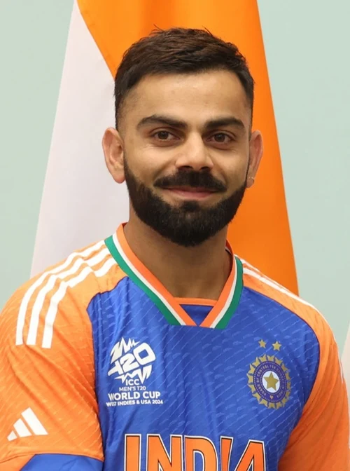

tetsing
rect

- Virat Kholi
- Virat Kohli[a] (born 5 November 1988) is an Indian international cricketer and the former all-format captain of the Indian national cricket team.[3] He is a right-handed batter and occasional right-arm medium-pace bowler. Considered one of the greatest all-format batsmen in the history of cricket, he has been acclaimed for his batting skills and records.[4] Kohli has the most centuries in ODIs and the second-most centuries in international cricket with 85 tons across all formats. He is also the leading run-scorer in the Indian Premier League.[5] Kohli is the most successful Test captain of India, with the most wins and 3 consecutive Test mace retainments.[6] He is the only batter to earn 900+ rating points across all 3 formats.